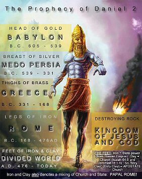
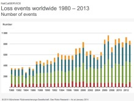
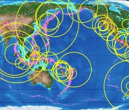

About Us | Resources
About Us | Resources© 2017 Signs-of-End-Times.com
This page is totally taken from the website 'SIGNS OF THE END TIMES'. I am very much grateful to the authors/organisers of this website for permitting me to reproduce their content here.
I appreciate and praise the Lord for their efforts in spreading the Word of God.
WE NEVER SET DATES. We merely proclaim the Bible truth concerning end time signs. It is Satan who keeps setting these dates to turn people away from truth.
When Noah and Lot warned their respective people of God's coming judgment and destruction, the people would not listen. Instead they treated Noah and Lot as "extremists". Then the destruction that DID come found the people unprepared. Thus it will be when Jesus Christ returns. As in the days of Noah and Lot, the soon return of our Lord Jesus will be a snare unto the people who do not heed the warning and surrender their lives to Him who knows all. (Luke 17:26-30)
This world is hearing and seeing the last warning message from God. Multitudes, multitudes in the valley of decision; for the day of the Lord is near in the valley of decision! (Joel 3:14)
→→ FINAL WARNING AND CALL OF MERCY ←← →→ WHAT MUST I DO TO BE SAVED? ←←
What you are about to discover in this site is amazing evidence that we in 2018, are living right in the end of times for this world as we know it. The prophecy of Daniel 2 alone shows we are in the 'time of the end', and all the other evidence proves we are in the very end times. The Biblical signs are clear for all to see, and after reading through this site with open eyes, even the scoffers will struggle to argue against it. Sure, many people throughout history have been proclaiming that they were living in the last days and the end of the world was nigh, and some of the Bible signs have always existed from the early days. But never has there been a time before when ALL these events were evident in so many diverse places and with such frequency and intensity. Our Generation is the FIRST generation to fulfill ALL the biblical signs. So we will show you from the many following signs on this and other pages, that without doubt we are living in the final years that the Bible prophesied were to come.
Please note: We are NOT here to set dates or times. We are here only to warn the world that the second coming of Jesus Christ is NEAR, even "at the door" ... Matthew 24:33 ...'So likewise ye, when ye shall see all these things, know that it is near, even at the doors.'
If you take into consideration all the signs, there is no mistaking that our generation is living in the last days, nearing the second coming of Jesus. Problem is, Satan can see how close we are to the end of the world, which is why he brings certain 'end times groups' into the spotlight, proclaiming false dates for the second coming, which when those dates come and go, causes many people to turn away completely from the truth. The truth being that WE ARE living in the end times. The Bible is very clear on that. We just can't set specific dates for Jesus' return. But we CAN know when the end is near ... And we are certainly now seeing "ALL these things".
Before you read on, please note this important point. In Matthew 24, Jesus speaks of wars, earthquakes and such things, but says these are just the "beginning of sorrows" and "the end is not yet". Now that word "sorrows" in the original language meant "birth pangs", the pain in childbirth. Now birth pangs speak of frequency and intensity. And as a woman gets nearer the birth, the "pangs" become more frequent and intense. This is true also for the signs of the end times. These signs began not long after Jesus' day, and as Jesus quoted, the end would not yet be, because this was just the beginning of sorrows. But throughout history we have seen the "pangs" (signs) become more frequent and intense, culminating in the day we live in now where the pangs are so frequent and intense that we must be right at the time of "delivery", when Jesus is to return. So don't let anyone fool you into believing that the signs today are just the beginning of sorrows and the end is not yet.
Hebrews 1:1-2 ...'God, who at sundry times and in divers manners spake in time past unto the fathers by the prophets, hath in these last days spoken unto us by his Son, whom he hath appointed heir of all things, by whom also he made the worlds.'
"The beginning of sorrows" started nearly 2000 years ago with the persecution of the early church and the destruction of Jerusalem. We are living right at the end of time.
Daniel 2:31-45 ..'Thou, O king, sawest, and behold a great image .. This image's head was of fine gold, his breast and his arms of silver, his belly and his thighs of brass, His legs of iron, his feet part of iron and part of clay. Thou sawest till that a stone was cut out without hands, which smote the image upon his feet ... Thou art this head of gold ... And after thee shall arise another kingdom inferior to thee, and another third kingdom of brass, which shall bear rule over all the earth. And the fourth kingdom shall be strong as iron ... And whereas thou sawest the feet and toes, part of potters' clay, and part of iron, the kingdom shall be divided ... Forasmuch as thou sawest that the stone was cut out of the mountain without hands, and that it brake in pieces the iron, the brass, the clay, the silver, and the gold; the great God hath made known to the king what shall come to pass hereafter.'
More than being a "sign" of the times, this is an historical FACT of where we stand in earth's history. The vision that God gave King Nebuchadnezzar as shown in the Bible verses above, and subsequently the interpretation to the prophet Daniel, consisted of an image of a man which depicted all the "ages" and ruling kingdoms from the time of Babylon until the second coming of Christ Jesus (the destroying Rock, which is the eternal kingdom of God).
By the way, if you are not convinced that the Bible is any sort of authority, then study the prophecy of Daniel 2. It perfectly foretold the future kingdoms of this world up until the end of time. And history confirms it as ACCURATE.
As you can see from the picture, the different parts of the man represented the different "ages" and ruling kingdoms of this world. And what is the last "age"? It's the feet of the image. And when did the last age start? It started in the year 476 AD. when Rome fell and split into the ten kingdoms of Europe. Which means this world has been in the "last age" for over 1500 YEARS! So add that to the amazing signs of the last days that you will see throughout this site, and you are left with no doubt that we are living right at the end of the toes on the image and right at the end of time, soon to see the second coming of Christ Jesus.
Daniel 11:45 ...'And he shall plant the tabernacles of his palace between the seas in the glorious holy mountain; yet he shall come to his end, and none shall help him.'
Now the very next verse in Daniel 12:1 says ... 'And at that time shall Michael stand up', indicating the close of probation and final time of trouble before Jesus returns. At what time? At the time that the 'he' in Daniel 11:45 plants the tabernacles of his palace in between the seas in the glorious holy mountain, which is Jerusalem in Israel. The 'he' in this Bible verse is the king of the north. And if you read our page on the king of the north, and study this for yourself, you will see that the king of the north is Turkey and Islam. And what does Daniel 11:45 say Turkey and Islam are going to do? Plant the tabernacles of his palace in Jerusalem. In other words, Turkey and Islam are going to 'move into' Jerusalem to take control. Do we see anything like that happening today?
Turkish Newspaper Close To President Erdogan Calls To Form Joint Islamic Army To Fight Israel
Turkey President Erdogan: 'Liberate Jerusalem' from the Jews
Turkish President Erdogan tells his citizens that Muslims need to assert dominance over Jerusalem
Turkish Govenor declares that Turkey's forces would soon march into Jerusalem!
So as you can see, this is very much on the table today! And with Donald Trump [being led by his Evangelical advisors] moving the US embassy to Jerusalem, this is going to anger Turkey and the Muslims even more. So keep watch for this sign, as it will be an indication that probation is about to end, the time of trouble will begin and Jesus will be about to return!
Daniel 12:4 ...'even to the time of the end: many shall run to and fro, and knowledge shall be increased.'
I Just love this sign, because it is clearly pointing to our day today, and it cannot be refuted by anyone. Throughout history we have had a slow and little increase in knowledge. But take a look at the EXPLOSION of knowledge over the past 150 years! Up until recently in history, the fastest form of transport was a horse. Now man can travel at hundreds of miles per hour, and cross the globe in a day! Technology has developed at a rapid pace, which has led to great improvements in computer power, scientific discoveries and the medical profession. Just look at how much we have learned about the human body with things like DNA and Cellular Structures etc. And how about "running to and fro"? This is pointing specifically to our day with planes, trains, automobiles and the busyness of modern day life. We are definately running to and fro and have knowledge like no time before us.
"run to and fro and knowledge increase" applies also to knowledge of Bible truths ...
This Bible sign has a dual application. "running to and fro and knowledge increase" also applies to knowledge of Biblical truths (see Amos 8:12). During the "dark ages", for over 1000 years, knowledge of Biblical truths were surpressed by the Roman Catholic Church. But since the protestant reformation and breakaway from Rome, God's people have been running to and fro in His Word FREELY and knowledge about great Bible truths have been revealed. God now has an end time remnant church with the FULL gospel truth to take to the world before the end comes, which was needed to fulfill the sign about taking the true gospel message to the whole world. Which you will read about further down the page.
Revelation 13:17 ...'And that no man might buy or sell, save he that had the mark, or the name of the beast, or the number of his name.'
Now this is a sign that most people miss! Have a think about it ... What needs to happen in order for the "beast system" to stop people from buying and selling if they refuse the mark? We need to have a worldwide financial system whereby everything bought and sold is through electronic means, not cash.
Has there been any time in history where this could happen? No. Are WE living in a day where this could happen? Most certainly, yes! And the powers of this world are now trying to make cash obsolete, and are actively pushing pure electronic forms of payment, like "PayPal" and "Google Wallet" for instance. Take a look at the news and you will see this being reported in different countries of the world.
Sweden close to being a Cashless Society
Cash is Dead, are Credit Cards Next?
Nigeria Deploying Biometric Technology Throughout the Banking System
Mastercard Tracking Global Economies Heading for Cashless Societies
Israel Leaders Pushing for a Cashless Society
UN World Food Program Pushing Smart Cards and Digital Payment
Cashless Society Drive Gaining Momentum in Rwanda
Above is just a few examples of the major push throughout the world for a cashless society. We have the techonology to do this now, which in times past wasn't possible. And look at the financial turmoil around the world today. This will help in bringing in a "unified" currency to help make it possible to enforce the mark of the beast. Technology isn't the mark, but technology is needed for proper enforcement of it. This is a SURE sign of the end times!
2 Thessalonians 2:3 ...'Let no man deceive you by any means: for that day shall not come, except there come a falling away first, and that man of sin be revealed, the son of perdition.'
Paul here is saying that "THAT DAY", the second coming of Christ, will not come until the falling away happens and that man of sin is revealed. Now many professed Christians today believe that the 'falling away' is something that will happen in the last days. But this is a wrong view, because the falling away began not long after the New Testament church and was completely fulfilled when the Roman Catholic Church took control and merged Christianity with Paganism, and punished anyone who did not bow to her so called 'authority' and false teachings. And that man of sin who was "revealed" to the world during the Protestant reformation is none other than the pope(s) of the Roman Catholic Church.
See proof of who the man of sin is HERE.
So, the falling away has happened and the man of sin HAS been revealed. Therefore the second coming of Christ can happen and this shows we are living in the end times.
Matthew 24:37 ...'But as the days of Noah were, so shall also the coming of the Son of man be.'
Luke 17:28-30 ...'Likewise also as it was in the days of Lot; they did eat, they drank, they bought, they sold, they planted, they builded; But the same day that Lot went out of Sodom it rained fire and brimstone from heaven, and destroyed them all. Even thus shall it be in the day when the Son of man is revealed.'
What was it like in Noah's day and Lot's day? We need to go to two other Bible verses to see what it was like. Genesis 6:13 tells us that in Noah's day the "earth was filled with violence." And in Jude 1:7 it says that in Lot's day, Sodom and Gomorrha had given itself over to "fornication and strange flesh". So violence prevailed in Noah's day and sexual immorality (including homosexuality) prevailed in Lot's day. And this would be a sign of the end times before Christ Jesus returns.
2017 - 1,516 MASS SHOOTINGS IN 1,735 DAYS: AMERICA'S GUN [VIOLENCE] CRISIS
2016 - MURDERS RISE IN 29 OF THE LARGEST CITIES IN AMERICA IN 2016
So our question is, does violence and sexual immorality (including homosexuality) prevail in the world today? Very much so, yes! Not only does violence and fornication rage across the whole world, homosexuality has become a "norm". Since 2001, at least 14 countries have fully legalized homosexual marriage, Argentina, Belgium, Canada, Denmark, Iceland, Netherlands, Norway, Portugal, Spain, South Africa, Sweden, New Zealand, Uraguay, France, with some parts of Mexico and America doing the same. And there are more countries being added to this list all the time.
US Supreme Court Declares Gay Marriage LEGAL in Historic decision
There are currently 110 MILLION Cases of sexually transmitted diseases with 20 MILLION new cases every year in America alone! (source)
Large rise in sexually transmitted diseases since 2012 in England (source)
Today, the world is FULL of violence and sexual immorality. You only need turn the tv on and you will see violence, fornication and homosexuality everywhere. The cities of the world today are especially bad and are no longer safe places to be.
What are we told in Jude 1:7? We are told that what God did to Sodom was set forth as an example to us today. And what did God do to the people of Sodom? He DESTROYED them with fire because of their wickedness, which included homosexuality!
1 Timothy 4:1 ...'Now the Spirit speaketh expressly, that in the latter times some shall depart from the faith, giving heed to seducing spirits, and doctrines of devils.'
How about a rise in spiritualism and the occult in the world? Have we seen this? Well, just look at the television and movies today. "Twilight", "Harry Potter", "Lord of the Rings", and a whole host of other television series and movies containing the occult and spiritualism. It has invaded our lives like no other time before us. And what is the cause of this? It is the false teaching of the immortality of the 'soul'.
Spiritualism is also the cause of these 'near death experiences' which Satan is deceiving more and more people with.
Many people don't realize that spiritualism has also invaded the majority of churches around the world, due to this false teaching of the immortality of the soul. Yet the Bible clearly teaches that "the dead know NOTHING" (Ecclesiastes 9:5), and that when we die we return to the dust of the ground from where we came (Genesis 3:19). But the churches have embraced this false teaching of the immortal soul, which is another sign of the times we live in.
"A belief in spiritual manifestations opens the door to seducing spirits and doctrines of devils, and thus the influence of evil angels will be felt in the churches." (E.White, The Great Controversy, p.603-604)
See the truth HERE about what happens when we die.
Hosea 4:3 ...'Therefore shall the land mourn, and every one that dwelleth therein shall languish, with the beasts of the field, and with the fowls of heaven; yea, the fishes of the sea also shall be taken away.'
This one has become a fairly recent phenomenon. During the last few years we have seen fish, birds and other animals die in huge numbers. Since 2010, millions of fish have been turning up dead in lakes, rivers and the sea, with this deadly red tide partly to blame. Also, Birds have been dropping out of the sky in huge numbers. And we are seeing other unusual animal deaths all around the world. Including Bees and Bats dying in their millions.
"Mass animal die-offs are on the rise, killing billions and raising Questions." (source)
The Honey Bee crisis deepens as evidence shows there has been a dramatic increase in die offs .. up to 50 percent of Bees are dying now, creating worry over food supply. (source)
The Rise of Jellyfish over the past few decades is a harbinger of the health of the world's oceans! (source)
The Oceans are on the Brink of a Catastrophe! (Source)
The book of Hosea not only applied to the nation of Israel. It also applies to our day and contains prophecies concerning the state of the world we live in today. So is this text from Hosea fulfilled in our day? Is it a sign of the end times? Yes!
Luke 21:25-26 ...'and upon the earth distress of nations, with perplexity; the sea and the waves roaring; Men's hearts failing them for fear, and for looking after those things which are coming on the earth: for the powers of heaven shall be shaken.'
So what about this Biblical sign? Is this being fulfilled in our day more than any other day before us? Most definately. Just look at all the natural disasters we are getting now every year. (CLICK ON THE IMAGE FOR A CHART SHOWING A TWOFOLD INCREASE OVER THE PAST 30 YEARS) Are the "seas and waves roaring"? Yes. Tens and even hundreds of thousands of people are being wiped out from Tsunamis and floods, and men's hearts are certainly fearing what is happening to this world. In America in 2010, a record was set for the number of Federal Disaster Declarations given over a year. That number was 81. In 2011, that number was broken again, with 99 Disaster Declarations given, costing over 32 Billion Dollars. And 2012 produced another year of record breaking disasters. Dr. Robert Hartwig states ... "The number of U.S. disaster declarations has been trending sharply upward, particularly over the past 15 years." (Source) ... We are really seeing things happening in this world now with regards to the fulfillment of Bible prophecy today. Click on the following charts.
See these Amazing Maps of Natural Disasters.
"How Natural Disasters Changed the World in 2012" - An estimated 32.4 million people worldwide were displaced due to natural disasters. (Source)
We are seeing an increase in volcanic activity worldwide
Matthew 24:7 ...'and earthquakes in divers places.'
The scoffers love to bash this one, but from the evidence available, it is clear that earthquakes are not only increasing in frequency, but also appearing in more and more "diverse places", which the Bible predicted.
Remember, these signs are to intensify during the last days, and that is exactly what is happening with earthquakes.
Take a look at the following information and judge for yourself.
New Zealand felt a record 32,000 earthquakes in 2016 - link
We had a 'millenium's worth' of earthquakes in just 2 years, during 2014 and 2015 (source).
Big earthquakes have doubled in 2014 compared to each year since 1979 (source).
A global SURGE in great earthquakes between 2004 - 2014. (source).
"Current graphs clearly show an alarming worldwide trend of increasing earthquake strength and frequency. These  results are in agreement with the USGS statistics page, which shows an increase in the frequency of stronger earthquakes (M > 5.0)." (source)
A series of massive quakes within 2 days in 2012 prompted an earthquake expert to suggest that the earth is "cracking up" (link)
As of April 2018, there were around 3,952 earthquakes happening a month. (Link)
God is giving us plenty of warning through these events, and we will be without excuse if that day of Christ's return comes upon us like a thief in the night and catches us unaware. We need to heed the signs and get ready!
Please see these amazing videos showing a graphical look into the earthquakes around the world. Christ said that there would be earthquakes in "diverse" places, and these amazing videos certainly fulfills that prophecy.
Daniel 12:4 ...'But thou, O Daniel, shut up the words, and seal the book, even to the time of the end.'
This sign carries on from the "increase in knowledge" sign above. But I wanted to separate it to show you that this sign alone reveals we are living in the last days. God tells Daniel to seal the book. In other words, to seal the prophecies contained within it. And that at the "time of the end", the prophecies would be unsealed and we would know what they mean.
The prophecies of Daniel 2 and 7 have been UNSEALED ←←
Daniel's 70 week prophecy has been UNSEALED ←←
The 2300 day prophecy has been UNSEALED ←←
So this alone confirms that we are living in the end times. But taking all the other signs together will show us how close we are to the second coming of Christ Jesus, the Son of the living God, and the end of the world.
Please see our END TIME PROPHECY website for many more Bible prophecy truths.
Matthew 24:4-5,11 ...'many shall come in My Name, saying, I am Christ ... and many false prophets shall arise and deceive many.'
We've certainly had our fair share of false Christ's appearing around the world. Also, today we have many false religions proclaiming many ways to eternal life, like Roman Catholicism, Islam, Hinduism, Buddhism, Sikhism, Folk Religions, Wicca, and many other 'new age' movements. With false prophets like the Pope, Muhammad, Krishna, Buddha, etc., leading these religions.
We also have many false prophets and leaders in "Christian" churches, like the the prosperity gospel preachers and people like Oprah Winfrey leading these new age movements. And millions of people have been sucked in and deceived by these 'false prophets'. There are also many who appear to be 'sheep leading the flock' but in fact are 'inwardly ravening wolves' leading the people to destruction. People like Rick Warren who preach just enough truth to lull the unlearned mind into following them into apostasy! Yes, this sign has certainly been fulfilled.
Please prayerfully seek the truth yourself, by studying the Word of God in the Bible.
1 Thessalonians 5:3 ...'For when they shall say, Peace and safety; then sudden destruction cometh upon them, as travail upon a woman with child; and they shall not escape.'
Is this sign being fulfilled in our day? Yes. There is an ecumenical movement today which we were told about in end times prophecy that is uniting the world in an effort to bring peace. Churches and faiths and political leaders are uniting like never before in an effort to bring peace to this world. But this ecumenical movement is not of God, because we as God's people are not to unite with the world or any false religion (Amos 3:3, 2 Corinthians 6:17, Revelation 18:4). When they do declare "peace and safety" then destruction will come upon them (1 Thessalonians 5:3).
Matthew 24:6-7 ...'And ye shall hear of wars ... For nation shall rise against nation and kingdom against kingdom.'
Many people say that this isn't a sign of the end times, because there have been wars since the beginning. Yes there have been wars since the beginning, but when you look at the frequency and intensity of wars, then it's plain to see that this is a sign of the times we are living in. During the 20th century alone, more people have been killed as a result of war than all previous centuries combined. This has resulted in HUNDREDS OF MILLIONS of people being killed in wars like World War I, World War II, Russian Civil War, Congo War, Korean War, Vietnam War, Iraq, etc. Today, there are conflicts and wars raging all around the world (Source). And in 2011, armed conflicts greatly increased according to this report.
So is war a sign for today? Of course is it. But remember, we are not to take any of these signs ON THEIR OWN. Jesus said ... "when ye shall see all these things, know that it is near". (Matthew 24:33). Taking one sign like this on it's own will not prove we are living in the last days. All signs need to be fulfilled.
Matthew 24:7 ...'and there shall be famine.'
Just look at the famine that has struck the world over the past 30 years. Thousands die everyday of starvation and according to this news article global starvation is spreading and increasing causing 1 Billion people to go hungry around the world. Add to that the failed crops throughout the world because of extreme weather, and bees dying off in massive numbers, and we have a worldwide shortage of food on it's way.
Not only that, we have the likes of Monsanto who are poisoning the crops that are left!
2.4 BILLION people survive on less than 2 dollars per day!
The sad thing about this sign, is that the amount of food that is wasted in the developed world could feed the hungry! So think about those in need next time you are about to fill up your shopping trolley with food that will be wasted. The Bible teaches us that we need to be helping the poor and needy, by giving them of our bread and clothing. Rather than throwing away what we don't want or need.
Matthew 24:9-10 ...'Then shall they deliver you up to be afflicted, and shall kill you: and ye shall be hated of all nations for my name's sake. And then shall many be offended, and shall betray one another, and shall hate one another.'
Christians were being killed for their faith in the first century, as well as during the dark ages when the Roman Catholic Church ruled the world and killed tens of millions of God's people. This is being repeated today in places like the Middle East, China, North Korea, Pakistan, India, Nigeria, Egypt, where many Christians are being killed for their faith in Christ Jesus everyday. And once the mark of the beast is enforced soon, then this persecution will spread to the Western World.
Matthew 24:12 ...'And because iniquity shall abound, the love of many shall wax cold.'
Idolatry, Adultery, Violence, Lust, Greed, Disrespect, Homosexuality, Theft, Lying, Aggression, Selfishness. Is this Biblical sign fulfilled in our day? Absolutely! Just go back 50 years and you would not see half the sin and wickedness that we see in people today. Look at what is portrayed on our TV screens and in the movies and video games! Violence, lust and all manner of evil. This is one of the major end of time signs. Our world today is aching under the burden of sin and I'm sure God will not allow it to continue for much longer.
And do you know the worst thing about "sin" today? It is made into "ENTERTAINMENT"! Through movies, television programs, radio, magazines, comics, you name it! The majority of people in this world today, including professed Christians are happily entertained by the very thing that put the Son of God on the cross! What an abomination!
And please note, I am not just talking about the sins of non Christians. A sure sign that we are living in the end times is the fact that the Christian churches are full of unconverted, sin loving people! Many of them thinking they don't need to keep the ten commandments, and can continue living in sin, as long as they "believe" in Jesus and go to church once a week. Yes, iniquity has abounded!
2 Timothy 4:3-4 ...'For the time will come when they will not endure sound doctrine; but after their own lusts shall they heap to themselves teachers, having itching ears; And they shall turn away their ears from the truth, and shall be turned unto fables.'
This sign of the times has certainly been fulfilled in our generation. A great majority of professing Christians these days do not study the Bible much. Instead they just rely on their pastor's word as the truth. Let me give you an example. Back during the Protestant reformation, where many people died standing up for the truth of God's Word. God revealed a great truth to the world about who the antichrist was. All of the reformers knew the truth about the Roman Catholic Church being the Bible antichrist. But as time has gone on and false teachers have crept into the churches, the majority of Protestants now reject this great truth that God opened up to the early Protestant leaders, and they now EMBRACE that antichrist church and have become a part of Babylon!
The above end time sign from Timothy also says that they would be turned unto fables. Let me give you a few fables that the majority of Christians have been turned to. 1. The rapture. 2. Looking to Israel for fulfillment of end times prophecy. 3. Mark of the beast being a microchip. 4. The Battle of Armageddon being a physical battle. And there are many more.
Please see our prophecy site for the truth on these topics.
Great and precious truths were opened to the people of the Protestant reformation, but the reformation failed because the people did not continue seeking the truth. Although God does have a remnant church with the full gospel truth, we now live in a day where the majority have turned away from the truth and been turned to fables. This sign of the end times has certainly been fulfilled in our generation.
Revelation 11:18 ...'And the nations were angry, and thy wrath is come, and the time of the dead, that they should be judged, and that thou shouldest give reward unto thy servants the prophets, and to the saints, and them that fear thy name, small and great; and shouldest destroy them which destroy the earth.'
Are the nations angry today? Yes, we have uprisings, conflicts and wars ALL OVER the earth. And what about man destroying the earth? Well, all throughout history, the most dangerous weapon that man had was a bow and arrow. Man could not do much damage to the earth. But now just look at what man can do and IS doing to the earth through industry, destructive weapons of war, chemicals, oil exploration, depletion of the forests and so on. Just look at the massive oil spills that have happened during the past 30 years around the world. The rivers and seas are becoming completely polluted, and man is certainly destroying the earth like no other time in history, and God's wrath is about to fall upon them!
We have been living in the time of judgment since 1844 and once the judgment has ended, THEN Christ Jesus will return to "reward" the saints and "destroy those who destroy the earth".
Matthew 24:14 ...'And this gospel of the kingdom shall be preached in all the world for a witness unto all nations; and then shall the end come.'
Notice Jesus said "THIS" gospel? There are many "gospels" being preached out there, but it is the TRUE GOSPEL that is to be preached to the world before the end can come. So is this being fulfilled today as one of the end time signs? Yes, because God's people are preaching the true gospel throughout the world like never before, through the internet, tv and satellite, radio, in the pulpit, and through print. We have never had the resources available before to reach the world the way we can now. This ministry alone receives thousands of visits everyday from people from all over the world seeking the truth. So yes, this Bible sign is BEING fulfilled now.
What end time message is God's true servants taking to the world today? THE EVERLASTING GOSPEL OF REVELATION 14
Take a look at this interesting quote from the 1980's ... "Before the final end, the world is to hear the message of the Lord's coming. Had no more rapid means of conveyance and communication been found than existed a century ago, it would have been impossible to communicate such a message to one generation. But such a work must be done for the last generation ... Then the last generation everywhere must hear the message, and this calls for rapid transit, and lightning couriers to bear the tidings to various parts of the earth." (Bible Readings for the Home, 1988 Ed.)
And what do we have now for "rapid transit" of the gospel message around the world? The internet and satellite! We are living in a time like no other and the gospel message is soon to reach the final corners of the earth, and THEN the final stages of this earth's history will take place.
But what about all the different languages you may say? Well, ministries like Faith Comes by Hearing provides a free audio app that shares the Bible in 883 languages! And that number is growing all the time. So yes, the languages of the world are being reached with the Word of God.
For more end time signs and even more evidence that we are living in the last days, please see End of World Signs.
I hope that you can see from the above Biblical signs of the end times that our generation is truly living in the last days, nearing the second coming of Christ Jesus. We are living in a time like no other. The world is being turned upside down and we need to get ready! If you are not a Christian and you realize that we are living in the end times and are wondering what you need to do, then please click here to see what you must do to be saved. Give your heart to Christ Jesus. He is about to return to bring judgment upon the whole world.
"So likewise ye, when ye shall see all these things, know that it is near, even at the doors. Verily I say unto you, this generation shall not pass, till all these things be fulfilled." (Matthew 24:33-34).....Go Top